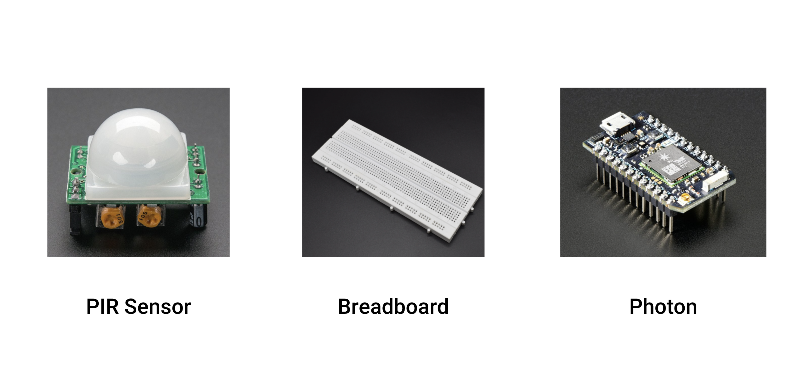

Project 3
Data Visualisation
Build a graphical page with visuals based on sensor-driven data.
Build a graphical page with visuals based on sensor-driven data.
I decided to use the PIR sensor along side of the photon board to collect data.
The data I wanted to collect was the frequency of my dog's eating&drinking habits. The sensor was placed near her bowl and recieves data every time she approaches for food or drinks water.
The visual starts as a blank screen, and everytime my dog approaches her bowl will adds certain amount of random dots on the screen. This final look is different to my initial idea which I was planning to track her eating habits for at least 3 days(which requires the system to stay on continously while recording) I learnt that I need to do more research before act on a project, and if I have more time I would work on build a visual that tells more information(such as a eating pattern)